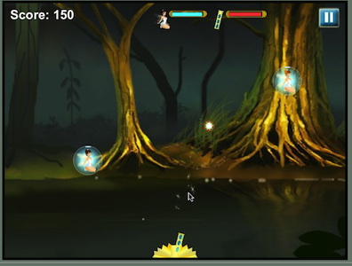
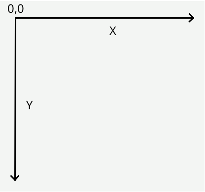

Overview
Canvas is a 2D drawing API recently added to HTML and supported by most browsers (even Internet Explorer 9 beta). Canvas allows you to draw anything you want directly in the web browser without the use of plugins like Flash or Java. With its deceptively simple API, Canvas can revolutionize how we build web applications for all devices, not just desktops.
These screenshots give you just a taste of what is possible with Canvas.
Apps made with HTML Canvas
- 


What is Canvas?
Canvas is a 2D drawing API. Essentially the browser gives you a rectanglar area on the screen that you can draw into. You can draw lines, shapes, images, text; pretty much anything you want. Canvas was originally created by Apple for its Dashboard widgets, but it has since been adopted by every major browser vendor and is now part of the HTML 5 spec. Here's a quick example of what some Canvas code looks like:
<html>
<body>
<canvas width="800" height="600" id="canvas"></canvas>
<script>
var canvas = document.getElementById('canvas');
var c = canvas.getContext('2d');
c.fillStyle = "red";
c.fillRect(100,100,400,300);
</script>
</body>
</html>
screenshot Simple red rectangle
This rectangle is drawn with the context.fillRect() function.
It's important to understand that Canvas is for drawing pixels. It doesn't have shapes or vectors. There are no objects to attach event handlers to. It just draws pixels to the screen. As we shall see this is both a strength and a weakness.
So where does it fit in with the rest of the web?
There are four ways to draw things on the web: Canvas, SVG, CSS, and direct DOM animation. Canvas differ from the other three:
SVG: SVG is a vector API that draws shapes. Each shape has an object that you can attach event handlers to. If you zoom in the shape stays smooth, whereas Canvas would become pixelated.
CSS: CSS is really about styling DOM elements. Since there are no DOM objects for things you draw in Canvas you can't use CSS to style it. CSS will only affect the rectanglar area of the Canvas itself, so you can set a border and background color, but that's it.
DOM animation: The DOM, or Document Object Model, defines an object for everything on the screen. DOM animation, either by using CSS or JavaScript to move objects around, can be smoother in some cases than doing it with Canvas, but it depends on your browser implementation.
Which? What? When?
So when should you use Canvas over SVG, CSS or DOM elements? Well, Canvas is lower level than those others so you can have more control over the drawing and use less memory, but at the cost of having to write more code. Use SVG when you have existing shapes that you want to render to the screen, like a map that came out of Adobe Illustrator. Use CSS or DOM animation when you have large static areas that you wish to animate, or if you want to use 3D transforms. For charts, graphs, dynamic diagrams, and of course video games, Canvas is a great choice. And later on we will discuss a few libraries to let you do the more vector / object oriented stuff using Canvas.
Before we go any further I want to clarify that when I'm talking about Canvas I mean the 2D API. There is also a 3D API in the works called WebGL. I'm not going to cover that here because it is still being developed and the browser support is rather poor. Also, it's essentially OpenGL from JavaScript, making it lower level than Canvas and much harder to use. When WebGL becomes more mature we will revisit it in later chapters.
Browser Support
And lastly, before we dive into working with Canvas, let's talk about where you can use it. Fortunately Canvas is now a stable API and most modern browsers support it to some extent. Even Internet Explorer supports it starting with IE 9, and its implementation is very good.
| Desktop Browser | Version |
|---|---|
| Safari | 3.0+ |
| Chrome | 10+ |
| Opera | 9+ |
| FireFox | 4.0+ |
| Internet Explorer | 9.0+ |
On the mobile side most smartphone platforms support it because most of them are based on WebKit, which has long had good support. I know for sure that webOS, iOS, and Android support it. I believe BlackBerry does, at least on the PlayBook. Windows Phone 7 does not, but it may come in a future update.
| Mobile Browser | Version |
|---|---|
| iOS | all |
| webOS | all |
| Android | 2.0+ |
| BlackBerry | Playbook and OS 6.0+ |
| Windows Phone 7 | none |
Now, not every mobile device has very complete or fast support for Canvas, so we'll look at how to optimize our code for mobile devices later in the performance section of this session.
Simple Drawing
As I said before, Canvas is a simple 2D API. If you've done any coding work with Flash or Java 2D it should seem pretty familar. You get a reference to a graphics context, set some properties like the current fill or stroke color, then draw some shapes. Here are a few of examples.
In this example we set the current color to red and draw a rectangle. Drag the numbers in the code to change the values and see how it affects the rectangle.
Here's another one.
In this example we set the current fill color, create a path, then fill and stroke it. Note that the context keeps track of the fill color and the stroke color separately. Also notice the different forms of specifying colors. fillStyle and strokeStyle can be any valid CSS color notation like hex, names, or rgb() functions.
Paths
Canvas only directly supports the rectangle shape. To draw any other shape you must draw it yourself using a path. Paths are shapes created by a bunch of straight or curved line segments. In Canvas you must first define a path with beginPath(), then you can fill it, stroke it, or use it as a clip. You define each line segment with functions like moveTo(), lineTo(), and bezierCurveTo(). This example draws a shape with a move to, followed by a bezier curve segment, then some lines. After creating the path it fills and strokes it.
Coordinate System
A quick word on coordinate systems. Canvas has the origin in the upper left corner with the y axis going down. This is traditional for computer graphics, but if you want a different origin you can do that with transforms, which we will cover later. Another important thing is that the Canvas spec defines coordinates at the upper left corner of a pixel. This means that if you draw a one pixel wide vertical line starting at 5,0 then it will actually span half of the adjacent pixels (4.5 to 5.5). To address this offset your x coordinate by 0.5. Then it will span 0.5 to the left and right of 5.5, giving you a line that goes from 5.0 to 6.0. Alternately, you could use an even width line, such as 2 or 4.

Images
Canvas can draw images with the drawImage function.
There are several forms of drawImage. You can draw the image
directly to the screen at normal scale, or stretch and slice it how you like.
Slicing and stretching images can be very handy for special effects in games
because image interpolation is often much faster than other ways kinds of
scaling.
Try changing the variables to see how stretching and slicing works. To stretch an image you must specify the source and destination coordinates. The source coordinates tell drawImage where to pull the pixels from in the image. Since the image above is 67x67 pixels, using 0,0,66,66 will pull out the entire image. The destination coordinates tell the drawImage where to put the pixels on the screen. By changing the w and h coords you can stretch and shrink the image.
Slicing is the same thing, but using source coordinates that don't cover the entire image. When you take a slice of an image be sure you don't go outside the source bounds or else the image will disappear. For example, if you drag the source width past 46, then it will try to access pixels beyond the right edge of the image. Using a negative source x coordinate will do the same
Text
Canvas can draw text as well. The font attribute is the same as its CSS
equivalent, so you can set the styleg, size, and font family. Note that the
fillText(string,x,y) function draws using baseline of the
text, not the top. If you put your text at 0,0 then it will be drawn off the top
of the screen. Be sure to lower the y by an appropriate amount
Gradients
Canvas can also fill shapes with gradients instead of colors. Here's a linear gradient:
An important thing to notice here is that gradient is painted in the coordinate system that the shape is drawn in, not the internal coordinates of the shape. In this example the shape is drawn at 0,0. If we changed the shape to be at 100,100 the gradient would still be in the origin of the screen, so less of the gradient would be drawn, like this:
So if you get into a case where you think you are filling a shape with a gradient but only see a single color, it might be because your coordinates are off.
So that's it for basic drawing. Let's stop there and do some exercises in the next chapter. You should already have a webbrowser and text editor installed. I recommend using Chrome because it has nice debugging tools, and jEdit because it's free and cross platform; but you can use the browser and editor of your choice.
foo
blah